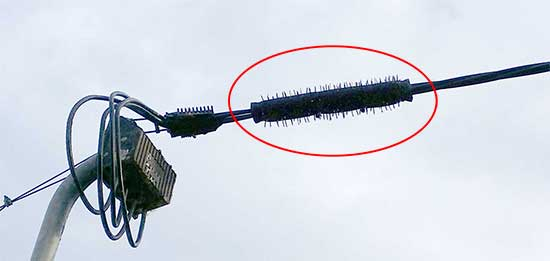
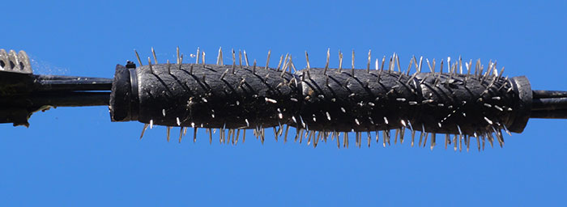
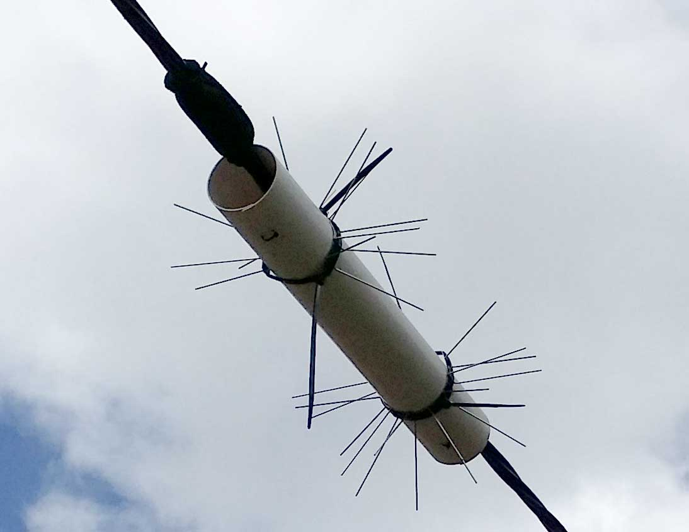
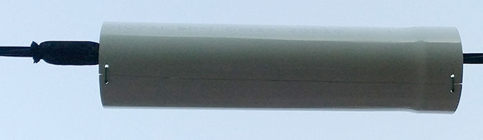
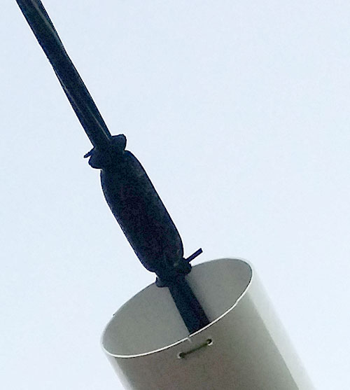
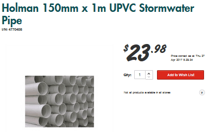
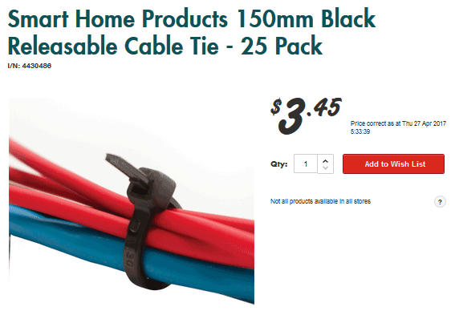
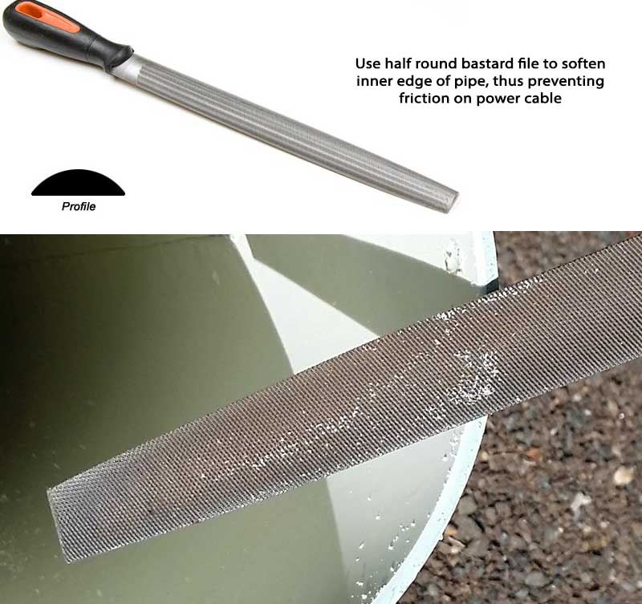
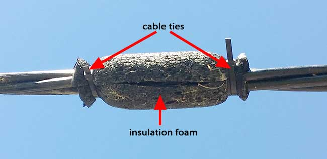

Possums on your roof?
Possums on your roof, getting there via the power cable? Do you drink your rainwater? If you call the power company and complain about the possums chewing out your solar panel cables and pooping in your drinking water, they tell you to take a hike (at least here in Queensland they do). Amount of sympathy = zero. Don't bother. The darned possums chew the cables on my solar panels and urinate/defecate onto the roof, which feeds into my water tank. I had to do something!
There are expensive things you can buy, like a possum disk

These disks are often not allowed by power companies because they exert forces on the power cable when flexing in the wind. Or you can buy an ultrasonic possum repeller, but they don't work (I tried one — useless).
There are two cheap and effective options: the Possum Prickle and the Possum Roller. Each has advantages and disadvantages.
Possum Prickle
So here's an easy way I devised to keep possums off your roof if they're getting onto it via a cable like your power line.

Parts needed
All you need is some 9x32mm pipe insulation foam:

a packet of stainless steel nails (they won't rust)

and 4 longish cable ties .

Instructions
- Cut off about a 375mm piece of insulation to use
- Cut it lengthwise with scissors to allow it to go over the cable
- Now push the nails through from the inside of the foam outwards, trying to get as many in as you can. I used about 70% of that packet. Leave a little unused patch of foam at the beginning and end for your cable ties to tie it to the power line.
- Get your electrician to slip it over the cable and secure with a cable tie on each end, and two even spaced in the middle (to stop it bulging open and allowing the possum to insert a paw there).
So far, 1 year and we have not had a possum on the roof! (Note: after a year in the sun, the foam shrinks a little and the cable ties will need to be tightened up).
The only thing now resting on the cable is the very soft foam tube. It cannot harm or damage the cable; indeed, by stopping the constant possum traffic, it's protecting the cable.
Pros and cons
Pros
- Does not cost much (~$25 in parts)
- Does not exert force or damaging friction on the power cable (or any cable)
- Is reasonably durable (see "cons" below)
- Is effective
- Low visibility, not very noticeable
Cons
- Foam degrades under the sun, losing its resiliency, and needs replacement every 1.5-2 years. If not replaced, possums will eventually be able to flatten/twist the nails enough into the degraded foam that they can cross the barrier
- Better for renters who want to make minimal changes
Possum Roller
Because of the problem of foam degradation experienced with the Possum Prickle, I decided to try another option, which I've called the "Possum Roller".
Basically, you get a length of PVC pipe (around 10-15 cm diameter), cut it along its length, open the cut and slide it onto the power cable. It needs to have a stopper of some sort on one end, otherwise the possums will just push it along with their nose until it rests against the end and this may allow the possum to leap past it onto the roof. Possums will not walk on it, because it is unstable. Short lengths of pipe they will jump over when running.


Parts needed
All you need is a length of PVC pipe:
a few cable ties
and a cheap can of white spray paint.
Instructions
- Cut the pipe lengthwise with a circular saw to go over the cable
- Drill holes at each end for the cable ties
- Smooth the inside edges of the pipe to prevent friction/cutting of the cable
- Spray the pipe white to prevent the sun's UV rays making it brittle over time
- Attach a short section of foam insulation to the cable with cable ties to stop the possums moving the pipe along the cable


Pros and cons
Pros
- Costs under $50
- Does not exert force or damaging friction on the power cable
- Very durable
- Very effective
Cons
- Very noticeable, sticks out like a sore thumb
Other people have had similar ideas in the past, for instance:

General comments
Some people say these solutions are dangerous, so that's why I suggest you get your electrician to attach these items to the mains cable, just in case you fall off the high ladder, or the cable is in poor condition and has cracks in the insulation that could be a danger to you. The insulation on the cable is several mm thick, so unless it has perished in the sun, the electrician will be safe. Danger of shock: infinitesimal. The biggest danger is being high up on a ladder.
Power companies, for liability reasons, don't want every Joe Sixpack attaching gizmoes to their mains power cables, and that's understandable, given the things some people have done, so they have blanket rules about nothing being attached to their cables. But you can see my device is harmless, or you should be able to see that if you have any technical or scientific training.
Disclaimer
As always, YOU DO THIS AT YOUR OWN RISK!